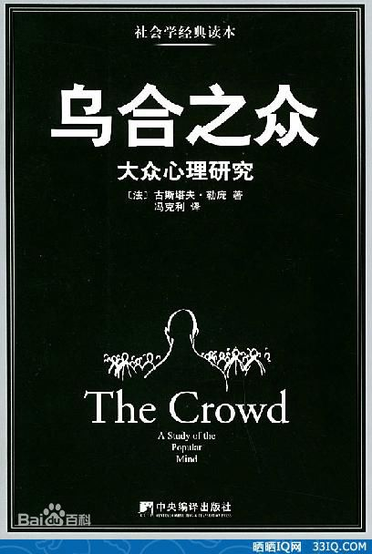
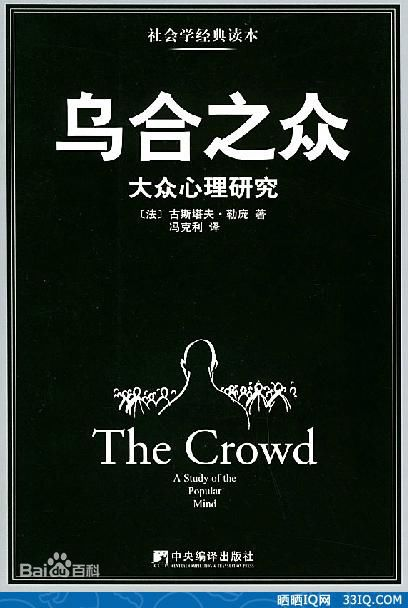

关于此网站
本网站致力于为每一个爱书人士推出能激励个人成长的好书！只有当一本书提供了精神成长、工作技能的提升，才会被我们所推荐！读书的益处:
1. 读书可以增加谈吐深度2.读书可以保持大脑的活跃
3.读书可以使人抵抗孤独
4.读书可以释放压力
5.读书使人明智
小组信息
学院：经贸学院班级：17电子商务B2班
小组：“高尔基”小组
作者简介：古斯塔夫·勒庞（Gustave Le Bon，1841—1931），法国社会心理学家。从1894年开始，勒庞发表了一系列社会心理学著作，主要有《民族进化的心理定律》（1894年）、《乌合之众》（1895年）、《社会主义心理学》（1898年）《革命心理学》（1912年）以及《战争心理学》（1916年）等。
《乌合之众：大众心理研究》细致描述了群体心理的一般特征，分析了人们在群聚状态下的心理、道德、行为特征。解释了为何群体往往呈现出“盲目”、“冲动”、“狂热”、“轻信”的特点，而统治者又是如何利用群体的这些特点建立和巩固自身统治的。
勒庞认为：“自觉地个性的消失，以及感情和思想转向一个不同的方向，是就要变成组织化群体的人所表现出的首要特征。”在五四运动初期，“民主和自由”的口号指导着人民去救亡图存，当运动如火如荼的开展后，个人情绪在群体中被格外放大，口号与主题的分化不明确，让群体做出了类似“火烧赵家楼”的事件，群体的基本特征可以大致归为两方面，一是个性的消失，二是感情的强化。再者便是“无意识品质占上风”，当群众聚集时往往都会情绪高涨，使个人的感情不分青红皂白的归顺集体思想，从而不自觉地进入到集体意识中去，群体行为脱离理性的的最明显体现就在于群体的无意识行为代替了个人的有意识行为。
在《乌合之众：大众心理研究》中作者认为：“‘群体’一词是指聚集在一起的个人，无论他们属于什么民族、职业或性别，也不管是什么事情让他们走到了一起。”可以说处于群体中的个人都将自己的情感与思想融入群体中，个体的差异从而被隐藏、模糊。它与题目中的“大众”表示的含义相同，强调的是一群人的集合。
《乌合之众：大众心理研究》是群体心理学的开山之作，凡是那些需要发动大规模群众参与的行动，诸如政治家煽动国家疯狂、商业界鼓动群体购买、媒体诱导民众意志等等，都必然利用了庞勒的思想，很多行动纲领都是参考了勒庞的群体心理分析而制定的。
勒庞认为：“自觉地个性的消失，以及感情和思想转向一个不同的方向，是就要变成组织化群体的人所表现出的首要特征。”在五四运动初期，“民主和自由”的口号指导着人民去救亡图存，当运动如火如荼的开展后，个人情绪在群体中被格外放大，口号与主题的分化不明确，让群体做出了类似“火烧赵家楼”的事件，群体的基本特征可以大致归为两方面，一是个性的消失，二是感情的强化。再者便是“无意识品质占上风”，当群众聚集时往往都会情绪高涨，使个人的感情不分青红皂白的归顺集体思想，从而不自觉地进入到集体意识中去，群体行为脱离理性的的最明显体现就在于群体的无意识行为代替了个人的有意识行为。
在《乌合之众：大众心理研究》中作者认为：“‘群体’一词是指聚集在一起的个人，无论他们属于什么民族、职业或性别，也不管是什么事情让他们走到了一起。”可以说处于群体中的个人都将自己的情感与思想融入群体中，个体的差异从而被隐藏、模糊。它与题目中的“大众”表示的含义相同，强调的是一群人的集合。
《乌合之众：大众心理研究》是群体心理学的开山之作，凡是那些需要发动大规模群众参与的行动，诸如政治家煽动国家疯狂、商业界鼓动群体购买、媒体诱导民众意志等等，都必然利用了庞勒的思想，很多行动纲领都是参考了勒庞的群体心理分析而制定的。
关于书籍的格言
构成这个群体的人，不管他是谁，不管他的生活方式有多大区别，不管他的职业是什么，不管他是男是女，也不管他的智商是高还是低，只要它是一个群体，那么他们就拥有一个共同的心理，集体心理。
大凡事情一旦涉入到情感领域，人与人之间的差距就消失了。尤其是在涉及到信仰，政治观点，道德评价，个人爱憎这些近乎于纯粹感性表达的领域中，最杰出的才智之士也不见得就比一个凡夫俗子更高明。